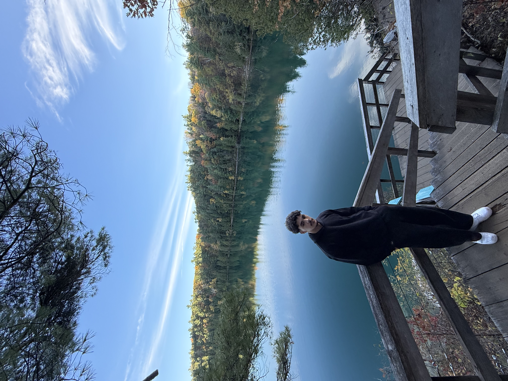

I build practical software systems with a backend-first mindset, using data, ML, and clear engineering fundamentals to turn messy technical problems into usable tools.

Computer Science student at the University of Ottawa, graduating August 2026, specializing in backend development, systems programming, networking, and applied machine learning. I enjoy breaking down complex technical problems, building reliable systems, and understanding how software and networks behave under real-world constraints.
My experience spans Linux systems, backend engineering (Java, C++, Python), database design, network protocols, packet analysis, and cybersecurity tooling. I have built projects in C++, Java, Go, PHP, SQL, and Python, including recommender systems, computer vision pipelines, and Android applications.
I currently work as a Research Assistant / Data Scientist with the Faculty of Social Sciences at uOttawa, contributing to a secure digital research infrastructure for sensitive public health and policy data.
Open to backend, systems, and applied ML roles and collaborations. Reach out by email or connect on LinkedIn.